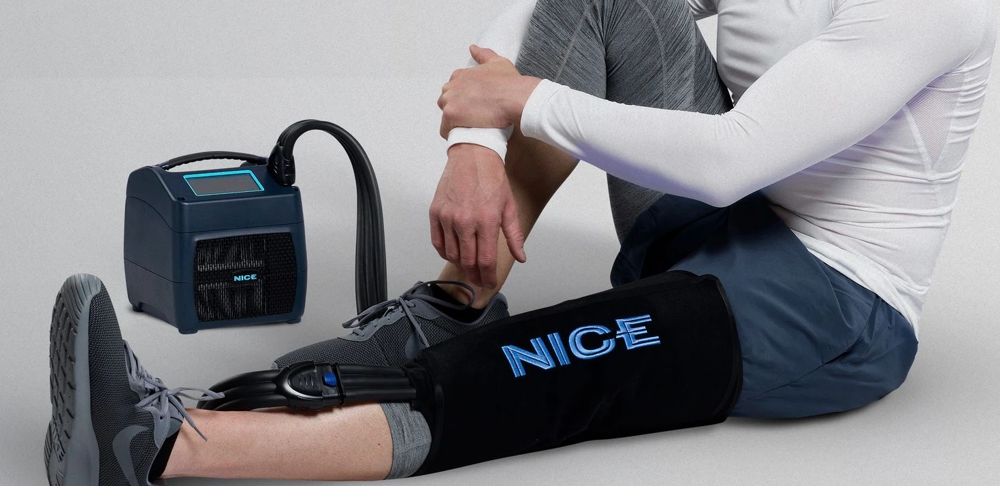
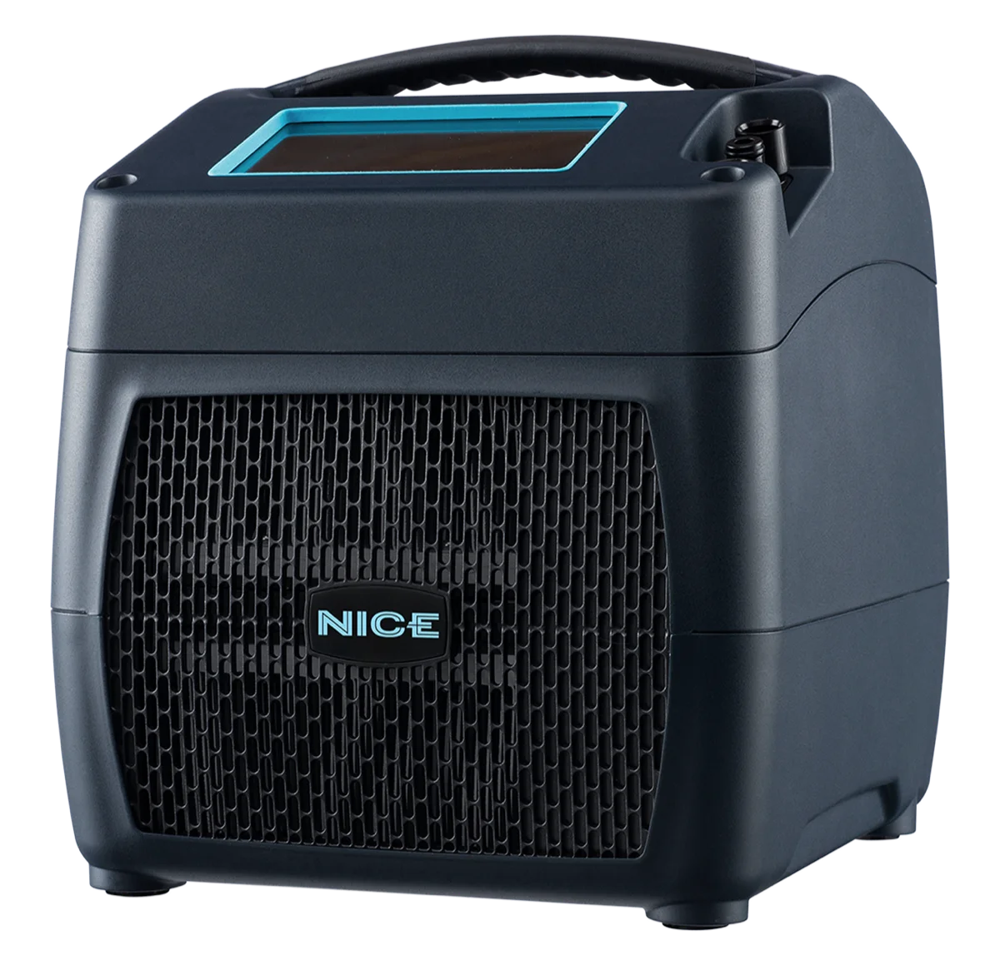

Sienta la diferencia que el frío y la compresión pueden hacer.
Terapia avanzada de frío y compresión en casa, con instalación personalizada y servicio de concierge de principio a fin.
Por qué los pacientes eligen Ortho Flow
Diseñado para ayudar a controlar el dolor y la inflamación.
La terapia de frío y compresión ofrece un enfoque sin medicamentos para manejar el dolor y la inflamación posoperatorios. Para los pacientes que desean depender menos de medicamentos durante la recuperación, el NICE1 ofrece una opción conveniente que se puede usar en casa.
Servicio personalizado de principio a fin.
Desde la entrega e instalación en casa hasta la asistencia continua durante todo el alquiler, Ortho Flow brinda un servicio receptivo y personalizado en cada etapa.
Recuperación más fácil en casa.
Sin carreras por hielo, sin recoger el equipo, sin envíos de devolución. Todo se lleva a su hogar, se brinda soporte durante el alquiler y se recoge cuando termina.
Frío y compresión para la comodidad posoperatoria
El sistema NICE1 combina terapia de frío precisa con compresión neumática programable para apoyar a los pacientes durante la recuperación posoperatoria. Diseñado para ayudar a controlar la inflamación y las molestias, el NICE1 proporciona terapia de frío consistente sin la inconveniencia del hielo.
Su diseño compacto y liviano, junto con controles de pantalla táctil sencillos, hacen que la terapia de frío y compresión sea más fácil de usar en casa.
Vendas disponibles: Pie y tobillo, rodilla, pierna baja, cadera, lumbar, cervical, hombro total, codo, mano y muñeca.

Lo que dicen nuestros pacientes
★★★★★
"Para mí fue el nivel de atención que mostró John. Vino a la casa y me enseñó cómo usar el equipo. Estuvo pendiente de mí durante toda mi recuperación. No podría haber pedido una mejor experiencia."
Natacha
★★★★★
"John brindó un servicio de primera categoría. Vino a nuestra casa a instalarlo y respondió rápidamente cualquier pregunta durante los dos meses que tuvimos el NICE. El NICE es la única opción para la cirugía de rodilla. Hizo una gran diferencia en la reducción del dolor y la inflamación. Tan conveniente y fácil de usar."
Paciente anónimo
★★★★★
"Todo el proceso de principio a fin. Me contactaron antes de la cirugía. El equipo fue entregado antes de mi procedimiento con una explicación de cómo funcionaba y qué haría por mi recuperación. Cuando terminé, lo recogieron en mi casa."
Elizabeth
Precios simples, todo incluido
Mínimo dos semanas a $25 por día, con entrega y recogida incluidas. ¿Necesita más tiempo? Desde $150 por semana después de eso. Cualquier problema de ajuste o con el equipo durante su alquiler se atiende sin costo adicional.
Creados para atender lo que nadie más atiende
Ortho Flow fue creado para llevar un mayor nivel de servicio, comodidad y manejo del dolor a la recuperación posoperatoria en casa. Después de ver muchas innovaciones en el mercado ortopédico, vimos una oportunidad de servir mejor a los pacientes una vez que salen del consultorio médico. Al actuar como una extensión del equipo de atención, Ortho Flow ayuda a los pacientes a gestionar sus necesidades posoperatorias con atención personalizada, soluciones modernas de terapia y servicio durante toda la recuperación.
Leer Nuestra HistoriaReserve su equipo
Indíquenos su plazo general y confirmaremos disponibilidad y entrega.
Por favor, no incluya información médica en este formulario. Nos comunicaremos con usted por teléfono para hablar sobre los detalles.